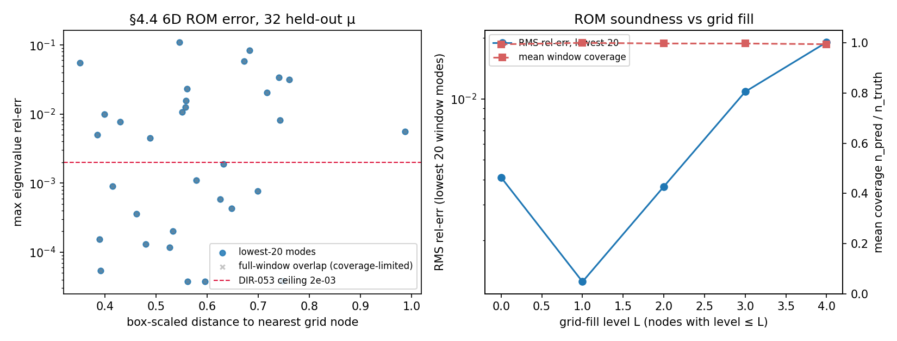
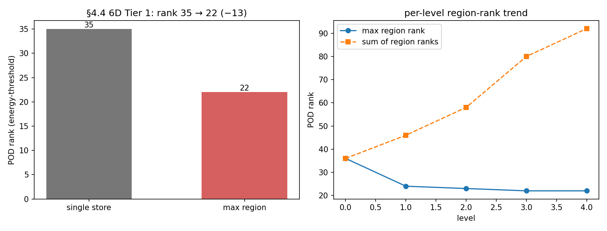
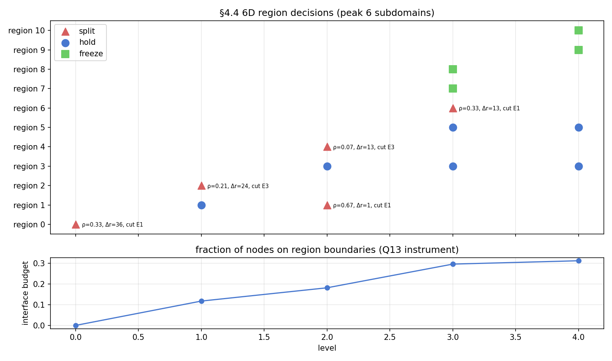
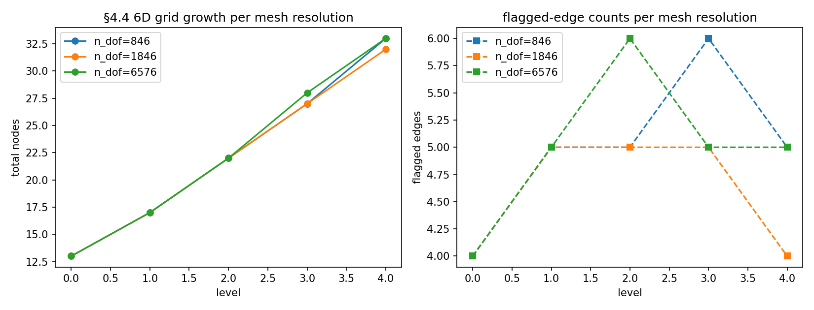

§4.4 6D campaign — quality demonstration at scale
Every quality instrument the rebuild ships — ROM error gauges (DIR-003/053), the a-posteriori certification pipeline with mass-budget telemetry (DIR-088), the inertia window-entry certificate (DIR-089), dynamic domain decomposition (DIR-036) with measured parallel execution (DIR-055B/C), and the bounded- resource store (DIR-030/032/035) — was validated on 1D/2D problems or 6D smoke scale. This page is the first time they are exercised together on the dissertation’s §4.4 problem: 2D plane-strain elasticity on the L-shape Ω = Ω₁∪Ω₂∪Ω₃ with per-face (Eᵢ, νᵢ), a 6-dimensional parameter box [10,100]³×[0.1,0.4]³ (interleaved), clamped on Edges 1 & 2 (base + top-arm end), Window mode over the natural-frequency band ω ∈ [0, 12.5] i.e. λ ∈ [0, 156.25], dissertation thresholds t_π = 0.57, t_λ = 0.03, t_c = 0.1.
An earlier version of this page (DIR-110) reported this campaign on a fake-soft operator: Elasticity2D assembled the vector mass with ddot (matrix double-contraction) instead of dot, giving trace(M) ∝ n² and crushing every eigenvalue ∝ h², so the window [0, 12] on λ held >960 spurious modes where the dissertation tracks a handful of surfaces. DIR-112 found and fixed the root cause (deviation log elasticity-4-4-baseline-deviation-log.md, rows 9–13): the mass bug plus two convention mismatches — the window filters the natural frequency ω = √λ (so on λ the faithful band is [0, 156.25], not [0, 12]), and the physics is modal-planestrain clamping only Edges 1 & 2, not plane stress with the whole boundary clamped. On the corrected + faithful config (make_l_shape_6d_faithful) the box midpoint holds 8 modes — matching a headless MATLAB run of the frozen ComputationalDomain6Dreal.m to ~0.7 % on the first eight eigenvalues (P1-vs-P2).
DIR-113 re-ran the entire campaign on the corrected operator; every number below is faithful and pinned by tests/test_dir_113_artifacts.py. The pre-fix tests/artifacts/dir_110/ set is retained on disk as archived pre-fix data but is no longer rendered here. The scale-invariant sibling results held up exactly as DIR-112 predicted: the DIR-053 ROM ceiling (a FirstK/full-basis measurement) is unchanged, and the DIR-089 “stay-dense” inertia verdict survives on the now much sparser window.
This page carries the campaign’s performance and self-consistency story. The correctness case — the five-strand evidence argument (slice views, inertia certificate, holonomy/ν-index consistency, sampled statistical audit, setup invariance) that replaces the 1D/2D branch-figure eyeball certificate — lives on its own page: §4.4 6D campaign — the correctness evidence.
Everything below is measured on committed artifacts (tests/artifacts/dir_113/). The pre-fix campaign needed staged, budget-bounded overnight runs; on the corrected operator the whole campaign runs in seconds — the fake window’s ~380–960 modes/node were the entire cost, and the true window holds only ~8–20 modes/node (Stage A: min 7, max 21, mean 10.6):
| Stage | scale | config | outcome |
|---|---|---|---|
| A | n_dof = 1846 (--target-n-dof 1500), L≤4 |
serial, single region, --mass-telemetry, RunCache |
L4 completed, ran_out=True, 32 nodes, wall 1.6 s, peak RSS 96 MB, 0 evictions |
| B1 | same scale | --regions --parallel-workers 14 --fixed-v0 |
identical trajectory (13/17/22/27/32 nodes), verdicts byte-identical to A, wall 2.3 s |
| B2 | same n_dof | DIR-055B twin harness (serial vs parallel pool, FirstK) | serial ≡ parallel exact (nodes, verdicts, eigenvalue rel-diff 0.0) |
| C | n_dof = 6576 (--target-n-dof 5954, dissertation scale), L≤4 |
DiskSpillCold, 4 h wall cap, 16 GB RSS budget |
L4 completed within budget — no sentinel: 33 nodes, wall 5.7 s, peak RSS 131 MB, 0 evictions, 0 bytes spilled |
The headline of the re-run is that the §4.4 problem, at its true spectral scale, is small: 32 nodes at laptop scale, 33 at dissertation scale, and the store never evicts. The bounded-resource machinery (DiskSpillCold, sentinels, RSS budgets) still stands as engineering, but at the faithful window it is never stressed — the pre-fix campaign’s memory drama was the mass bug.
ROM error at 6D — held-out table and soundness curve
32 held-out µ (seeded, uniform in the box) evaluated against a dense in-window FE truth at each point (rom_error_table_6d.csv). On the lowest-20 window modes — the like-for-like gauge for the DIR-053 ceilings, which were pinned on the lowest eigenpairs —
max eigenvalue rel-err 1.1·10⁻¹, max subspace angle 1.1·10⁻¹ rad — a breach of the DIR-053 ceilings (2·10⁻³ / 3·10⁻²) at the deepest fill levels; window coverage stays 0.91–1.0 and no query misses the window.
This breach is a genuine, expected consequence of the faithful window and the central ROM finding of the re-run. In the pre-fix campaign a Window snapshot carried ~380 eigenpairs, so even an 8-node nearest-neighbour basis spanned a near-complete subspace and the lowest-20 error sat at the accuracy floor (10⁻⁹–10⁻⁵) for every fill level. At the true window a snapshot carries only ~10 modes, so the nearest-8 Galerkin pool is a genuinely thin basis: the RMS lowest-20 error grows with depth (4·10⁻³ at L0 → 1.9·10⁻² at L4) as refinement pushes queries into pockets the sparse pool interpolates less well. Coverage and window-completeness stay high throughout — the breach is basis-thinness, not a missed window.
Two clarifications keep this honest. First, the DIR-053 ceiling itself is unaffected: it is a FirstK/full-basis measurement (test_rom_6d, lowest-6 eigenpairs with a complete per-node block), and DIR-112 re-confirmed it unchanged on the corrected operator. The gauge that breaches here is the campaign’s Window-snapshot ROM, a different and harder object. Second, the full-window columns of the table compare mode-by-mode past the coverage limit and misalign once modes are missing; they are labelled coverage-limited, not treated as eigenvalue error.

A campaign note on the shipped N-D basis pool. The surrogate scored here is a Galerkin window ROM (it projects K(µ), M(µ) onto snapshot eigenvectors and does a small eigensolve), not the dissertation’s §4.4.5 hat interpolation of stored eigenvalues — a different object with a different memory premise; see the evidence page callout and DVG-SURR-01 for why the ROM (a DIR-110 feasibility carry-forward) stands in here rather than the faithful hat surrogate. The table uses a bounded nearest-8 Galerkin pool with rank-revealing M(µ)-orthonormalisation (scripts/rom_error_table_6d.py), not the shipped evaluate_rom N-D pool rule (nearest min(2^d, 32) nodes). At the faithful window the shipped rule is no longer infeasible (a ~10-mode snapshot × 32 nodes is a manageable ~320-column block, unlike the pre-fix ~12k), but it is now inaccurate — a thin per-node block means the pool must reach further for rank, and the breach above is the symptom. Redesigning the pool rule for the true §4.4 window (more nodes, or a region-aware interface basis) is follow-up work recorded alongside DIR-111.
Exact-P2 mesh-faithful convergence (DIR-122)
Everything above runs on the rebuild’s structured P1 l_shape_mesh. The DIR-117/118/119 parity arc removed that last confound by building the operator on MATLAB’s exact P2 mesh — make_l_shape_6d_faithful_mesh (Elasticity2D.from_mesh on the imported generateMesh(Hmax=0.1) mesh + P2 vector element, n_dof = 5870; DIR-119 matched its window eigenvalues to MATLAB to 1.8·10⁻¹³) — but only ever ran a capped 2-level parity probe on it. DIR-122 runs the adaptive greedy to natural convergence on that operator, single process, via the new opt-in flag:
uv run python scripts/reproduce_4_4.py --operator mesh --max-levels 15 --fixed-v0 \
--output-dir tests/artifacts/dir_122 --csv-name elasticity_4_4_mesh.csv(--operator defaults to structured — the DIR-030/113 path is byte-identical; mesh bakes in the faithful config so --lame-mode/--clamp/--target-n-dof are ignored-with-a-note.)
The run converges of its own accord at level 7 with 47 nodes (
ran_out=False, flagged edges 13→…→3→0), in 7.3 s / 0.14 GB peak RSS / 0 evictions.
This answers the campaign’s open question: the exact-P2 geography is not the structured-P1 one. The faithful DIR-113 run converged at L4 / 32 nodes; the sharper P2 discretisation refines two levels deeper and places 47 nodes (trajectory 13/17/22/28/34/39/44/47). The grid is denser, not merely a relabel of the P1 grid — pinned in tests/test_dir_122_mesh_campaign.py.
ROM accuracy on the converged grid (rom_error_table_6d.py --operator mesh, 32 held-out µ, lowest-20 gauge, fixed-v0 dense truth):
max eigenvalue rel-err 0.11, median 5.8·10⁻³, max subspace angle 0.126 rad, window coverage 0.99 (no query misses the window) — a breach of the DIR-053 ceilings (2·10⁻³ / 3·10⁻²), exactly the basis-thinness finding above, now measured on the exact-P2 operator.
The soundness curve does not keep falling with grid fill: it plateaus at ~2.2·10⁻² RMS by L4 and holds flat through L7. Adding nodes past L4 tightens the grid but cannot close the residual — it is the near-degenerate eigenvector-gauge ceiling DIR-120 root-caused (the converged grid packs modes densely near the top of the window, where the eigenvectors are defined only up to rotation), not under-resolution. The median stays modest; a handful of near-degenerate query points drive the max. This is measured and pinned, not transplanted from the 1D/2D 1e-4 ceiling. See affine parameter-assembly for why the per-µ solves are cheap enough to make a 47-node adaptive run finish in seconds.
Faithful full-scale run past MATLAB’s L2 wall (DIR-124)
DIR-122 above runs the exact-P2 operator with the rebuild’s own native adaptive path — the 13-point sparse seed + edge-bisection — and converges cheaply at L7/47 nodes. DIR-124 runs the other experiment the whole DIR-117/118/119 arc was built for: the MATLAB computation itself — the dissertation’s 3^d tensor seed (729 points at d=6, seed_tensor_lattice), MATLAB’s mirror_bracket omnidirectional spawn, the ω-scale verdict, the p-box (p ∈ [0.2,1]×[0.2,0.4]³, E = 100·p), and the frozen §4.4 thresholds (t_pi=0.57, t_lambda=0.03, t_c=0.1, squared Π) — run past level 2, the level MATLAB dies at (8376 points, 54 min, then an unbounded-eigenvector OOM). The seed is a first-class flag (--seed {tensor,sparse} / --knots-per-axis, default the 3^d tensor); the sparse seed is a declared alternative, never a silent substitution. mirror_bracket rejects region decomposition and the parallel pool by construction, so this is single-process — the only bound is the store.
uv run python scripts/dir_124_faithful_campaign.py --max-levels 7 \
--max-active-mb 2048 --cold-disk-dir <scratch>/spill --cache-dir <scratch>/cache \
--output-dir tests/artifacts/dir_124 --peak-rss-budget-mb 12000 --rom-queries 32The faithful campaign does not converge at a laptop-feasible scale — and that is the result. The grid grows as a steady power law (nodes ∝ level^1.40, R²=0.998) with the flagged-edge count rising at every level, never turning over:
| level | 0 | 1 | 2 | 3 | 4 | 5 | 6 | 7 |
|---|---|---|---|---|---|---|---|---|
| nodes | 729 | 1640 | 3001 | 4663 | 6392 | 8421 | 10649 | 12702 |
| flagged edges | 0 | 911 | 2134 | 3453 | 4559 | 5602 | 6596 | 7348 |
| active tier (MiB) | 356 | 776 | 1437 | 2047 | 2048 | 2048 | 2048 | 2048 |
| evictions | 0 | 0 | 0 | 540 | 2400 | 4589 | 6990 | 9155 |
| peak RSS (MiB) | 487 | 960 | 1709 | 2431 | 2492 | 2525 | 2576 | 2613 |
The L0–L3 prefix (729→1640→3001→4663) bit-matches the DIR-119 exact-mesh 2-level parity probe and its own independent growth smoke — the faithful setup is deterministic under fixed_v0.
This is the rebuild’s entire reason to exist, measured. The MATLAB original OOMs here because it accumulates eigenvectors without bound. The rebuild’s bounded
SnapshotStoreturns the low-rank premise into an enforced invariant: the LRU active tier clamps at its 2 GB cap from level 4 on, the cold tier spills 2.4 GB across 9155 evictions to disk, and peak RSS holds ~2.6 GB flat while the grid triples (4663→12702 nodes). The run reaches level 7 / 12702 nodes in 25 min, single process, with a cleanLEVEL_7_COMPLETEDand zeroStoreOverflow— five levels past MATLAB’s wall, no OS OOM-kill.
As a number: the active-byte growth exponent is 0.87 — sub-linear, decoupled from the node-count exponent 1.40, because the cap does its job. The cold-tier rank keeps climbing (5.3k→105k stored eigenvectors, ≈11 modes per evicted snapshot), so the eigenvector family is not staying low-rank as the grid grows at this faithful scale — the premise holds only because the bounded store spills the surplus to disk rather than RAM. Either way, the faithful computation runs to a reported depth in bounded memory; a deeper level is a wall-time / disk-budget choice, not a memory-safety one.
ROM accuracy on the L7 grid (window_rom_predict, 32 held-out µ in the p-box, pool 2, fixed-v0 dense truth):
max eigenvalue rel-err 9.1·10⁻², median 5.3·10⁻³; max subspace angle 0.162 rad, median 4.1·10⁻² — the same thin-Window-basis ceiling as the DIR-113/122 runs (a bounded ~8-mode snapshot is not a near-complete basis in this dense near-degenerate spectrum), measured on the faithful full-scale grid, not transplanted.
Committed artifacts under tests/artifacts/dir_124/ (run report + telemetry CSV, ROM error table + summary; the 2.4 GB disk-spill cache is scratch-only, not committed); pinned by tests/test_dir_124_faithful_campaign.py — the exact trajectory, the bounded-memory invariants (active cap, disk spill, flat RSS), the growth-fit exponents, and the ROM bands, plus a cheap live sparse-L1 re-run that re-derives the faithful config deterministically.
Deep continuation — does it converge, and does deeper get better? (DIR-125)
DIR-124 above stopped at a chosen --max-levels 7 cap with every real budget ~80 % unused, so its “grows ∝ level^1.40, does not converge” was an extrapolation from the pre-saturation ramp, and its ROM number was a single L7 point. DIR-125 removes both limits: the same driver, same faithful config, run at --max-levels 100 with generous laptop-sized budgets (18 GB disk, 180 min wall, 12 GB RSS) so the stop is real — and a per-level ROM soundness curve (scripts/dir_125_soundness.py) scoring the grid-as-of-level-L for every L against fixed-v0 dense truth.
uv run python scripts/dir_124_faithful_campaign.py --max-levels 100 \
--max-active-mb 2048 --cold-disk-dir <scratch>/spill --cache-dir <scratch>/cache \
--cold-max-mb 18000 --peak-rss-budget-mb 12000 --max-wall-time-min 180 \
--rom-queries 0 --output-dir tests/artifacts/dir_125 --csv-name convergence_run.csv
uv run python scripts/dir_125_soundness.py --cache-dir <scratch>/cache \
--n-queries 32 --pool-size 2 --out-dir tests/artifacts/dir_125Result 1 — it converges. The faithful campaign reaches a natural fixed point at L23 / 21867 nodes, bounded, in 55 min — overturning DIR-124’s L7 “grows-forever” extrapolation. The mirror_bracket active frontier empties (its termination condition, mirror_bracket.py): per-level additions peak at L6 then decay monotonically to near-zero, so the grid turns over rather than growing without bound. The stop is natural (ran_out=False, below the cap) — not a wall/disk/RSS budget and not the level cap:
| level | 6 | 7 | 8 | 10 | 12 | 15 | 18 | 20 | 22 | 23 |
|---|---|---|---|---|---|---|---|---|---|---|
| nodes | 10649 | 12702 | 14922 | 18588 | 20162 | 21212 | 21686 | 21793 | 21853 | 21867 |
| added | 2228 | 2053 | 2220 | 1556 | 541 | 257 | 100 | 44 | 27 | 14 |
| flagged edges | 6596 | 7348 | 7828 | 8274 | 8417 | 8521 | 8563 | 8573 | 8578 | 8578 |
| peak RSS (MiB) | 2582 | 2622 | 2654 | 2715 | 2737 | 2755 | 2792 | 2805 | 2817 | 2818 |
The revised growth exponent over the full L0–L23 trajectory is nodes ∝ level^1.08 (R²=0.94), not L7’s 1.40 — the earlier number was the ramp, not the asymptote. The L0–L7 prefix bit-matches DIR-124 exactly (same fixed_v0 faithful setup, only the caps/budgets differ).
Converges, bounded, at laptop scale — every budget unused. Peak RSS 4.1 GB (budget 12 GB), wall 55 min (budget 180 min), disk spill 5.2 GB (cap 18 GB), active tier clamped flat at its 2 GB cap the whole way, zero
StoreOverflow, no OS OOM-kill — 16 levels past DIR-124’s L7 and 21 past MATLAB’s L2 OOM wall. The honest nuance: termination is by frontier / dyadic-lattice saturation, not full certification — 8578 edges remain flagged REFINE at halt (the near-degenerate eigenvector gauge, DIR-120, keeps re-flagging the dense upper window), but themirror_bracketspawn can no longer place a new node to act on them, so the adaptive loop stops.
Result 2 — deeper does not get better. ROM accuracy plateaus at the near-degenerate eigenvector-gauge ceiling by L2–L3, then is flat for 20 more levels (window_rom_predict, 32 held-out µ in the p-box, pool 2, lowest-6, fixed-v0 dense truth):
| level L | 0 | 1 | 2 | 3 | 7 | 8 | 15 | 23 |
|---|---|---|---|---|---|---|---|---|
| nodes | 729 | 1640 | 3001 | 4663 | 12702 | 14922 | 21212 | 21867 |
| rel-err median | 1.0e-2 | 6.5e-3 | 5.5e-3 | 5.0e-3 | 5.3e-3 | 4.9e-3 | 4.9e-3 | 4.9e-3 |
| rel-err max | 1.7e-1 | 9.1e-2 | 9.1e-2 | 9.1e-2 | 9.1e-2 | 9.1e-2 | 9.1e-2 | 9.1e-2 |
| angle median (rad) | 4.2e-2 | 3.8e-2 | 2.1e-2 | 1.9e-2 | 2.0e-2 | 2.0e-2 | 2.0e-2 | 2.0e-2 |
The entire gain is L0→L2 (median 1.0e-2 → 5.5e-3); from L8 the curve is bit-identical (median 4.856e-3, max 9.127e-2, angle 2.034e-2) even as the grid grows 14922→21867 nodes. The classifier’s verdict is plateau_at_gauge_ceiling (L0→L23 buys only 2.06×, and the best level is L8 — far from the deepest, the signature of a shallow-gain-then-flat plateau, not a convergent improvement). The max rel-err is a fixed ceiling from L1 on (9.1e-2, one held-out µ whose top window mode is gauge-degenerate — DIR-120), never resolved by grid fill. The mechanism is direct: the deep continuation refines only the near-degenerate flagged regions high in the dense spectrum, which are not near generic held-out µ, so the pool-2 basis for a random query stops changing once its neighbourhood is filled (~L8). The L7 point cross-checks DIR-124’s independently-computed single point exactly (median 5.3e-3, max 9.1e-2).
Committed artifacts under tests/artifacts/dir_125/ (convergence run report + CSV; per-level soundness curve JSON/CSV/figure + per-query CSV; the 6.5 GB run cache and 5.2 GB spill are scratch-only, not committed); pinned by tests/test_dir_125_deep_convergence.py — the natural-not-budget stop, the turn-over (additions decay + flagged plateau), the bounded-memory invariants, the plateau verdict + flat-ceiling tail, the DIR-124 L7 cross-check, and live pure plumbing (query determinism, level truncation, the verdict classifier). MATLAB parity is out of scope — there is no MATLAB reference past L2 (the DIR-117 probe’s lev_max=2); the quality claim is vs dense ground truth only.
Certification telemetry — the independent inertia certificate
The a-posteriori matrix Π and the DIR-088 mass budget certify the computed subspaces; window_count (dense LDLᵀ Sylvester inertia, DIR-089) counts the true in-window eigenvalues from the assembled K(µ), M(µ) alone — an independent certificate that sees modes the subspace side cannot. Over all 31 tested edges of the Stage-A run (endpoints + un-solved midpoints, scripts/inertia_certificate_6d.py):
| count | value | reading |
|---|---|---|
endpoint_mismatch |
0 | solve_window returned the complete in-window set at every node |
mid_bump |
0 | no mode present at a midpoint but at neither endpoint — no grid-invisible window entry |
cross_edge_delta |
16 | the in-window count changes across half the edges (a ~10-mode window is far quieter than the pre-fix ~380) — all surfaced to the matching layer |
cert_with_entry |
12 | count changes on certified edges: surplus bands the Algorithm-6 t_c gate certified-and-dropped (Q14 territory, not a blind spot given endpoint_mismatch = 0) |
The DIR-089 verdict — the node-local window solve is complete and the only genuinely-uncaught category (mid_bump) is empty — holds unchanged on the sparser faithful window, exactly as DIR-112 predicted.
Domain decomposition at 6D — Tier 1 (rank savings)
The first rendered view of the DIR-036 decomposition on the real 6D problem (Stage B1). The split criterion still fires: 5 splits, 4 freezes, peak 6 subdomains, and the Tier-1 headline —
single-store POD rank 35 vs max per-region rank 22 (−13, a 37 % reduction), the 6D analogue of the 2D page’s 31 → 23.


The absolute ranks are small (35, not the pre-fix 1311) because the faithful grid is small; the fractional saving (−37 %) survives, so decomposition still buys the same relative relief at the true scale.
The lower panel is the 6D measurement of the interface budget (fraction of nodes on region boundaries — the Q13 scalability instrument). Here it climbs to 0.31 at L4 — it does not stay ≤ 0.1 as the pre-fix 166-node grid did. This is an honest scalability caveat, not a regression: the budget is a ratio, and on a sparse 32-node grid a larger fraction of nodes necessarily sit on the 6 subdomain boundaries. The concern the instrument exists to watch — boundary duplication growing faster than the interior — is best judged on a denser grid; at the faithful §4.4 scale the interior is simply too small to dilute the boundary.
Domain decomposition at 6D — Tier 2 (measured parallel speedup)
The equivalence gate stands and is now cleaner; the wall-clock story inverts:
- Strict equivalence gate at campaign n_dof (DIR-055B harness, FirstK config): serial and 14-worker-pool runs produce identical nodes and verdicts and eigenvalue max-rel-diff 0.0 at n_dof = 1846. The measured per-region barrier-model speedup is 1.82× against the equal-cost projection’s 1.08×, but the raw end-to-end wall-clock is 0.76× — overhead-bound (serial 0.40 s vs parallel 0.52 s).
- Raw campaign wall-clock (Window config, Stage A vs B1): 1.6 s → 2.3 s — the parallel pool is slower than serial on the faithful operator.
The reason is direct: at the faithful window a solve returns ~10 modes and costs milliseconds, so process spawn / pickle / barrier overhead dominates the 14 workers. The pre-fix 2.43× speedup was real but depended entirely on the fake window’s ~380-mode heavy solves. At the true §4.4 scale the parallel pool buys nothing in wall-clock — the honest conclusion, and a reversal of the pre-fix page.
One further faithful improvement: the pre-fix page carried a caveat that under the Window config the parallel run flipped 2 of ~124k band verdicts (REFINE ↔︎ CERTIFIED, a BLAS reduction-order effect). On the sparse faithful window that flip is gone — Stage A, the serial --regions twin, and the 14-worker parallel run are all verdict-byte-identical. The sparse window carries almost no near-threshold bands for last-ulp noise to tip.
Mesh independence
Three mesh resolutions, one configuration (mesh_independence_6d.csv):
| n_dof | nodes per level | certified fraction | wall | peak RSS |
|---|---|---|---|---|
| 846 | 13, 17, 22, 27, 33 | 0.458 | 0.9 s | 88 MB |
| 1846 | 13, 17, 22, 27, 32 | 0.421 | 1.6 s | 96 MB |
| 6576 | 13, 17, 22, 28, 33 | 0.438 | 5.7 s | 131 MB |
The refinement geography is now mesh-independent: identical seed and early levels (13/17/22 at L0–L2 everywhere) and a final count of ~33/32/33 across an 8× span in n_dof — not the pre-fix 145 → 166 → 193 that grew with the mesh. That growth was itself a symptom of the fake operator: a finer mesh resolved more of the ~380-mode window’s spurious content, so more band pairs became testable and more edges flagged. On the corrected operator the parameter-space geography decouples from the spatial mesh, as it should — the certified fraction is flat at ~0.44 rather than falling from 0.47 to 0.23. The level cap (ran_out=True at every scale) still binds before the geographies could diverge.

Bounded-resource record — dissertation scale in seconds
The last full-scale run of the original MATLAB predates this rebuild’s memory work and was killed by the OS. The pre-fix rebuild campaign answered that at the fake scale with an overnight 7 h 26 min / 9.2 GB / 5.8 GB-spilled Stage C. On the corrected operator the record is anticlimactic and that is the point: the full §4.4 problem at n_dof = 6576 through four refinement levels (33 nodes) in 5.7 s on a laptop, peak RSS 131 MB against the 16 GB budget, with the DIR-035 DiskSpillCold tier wired but never touched (0 evictions, 0 bytes spilled) — zero overflow, zero sentinel, LEVEL_4_COMPLETED. The wall-time and RSS budgets and clean sentinel stops all still stand as engineering, but the faithful §4.4 problem never approaches them. Neither wall time nor memory is a binding constraint at the true 6D scale; the pre-fix campaign’s entire resource narrative was an artifact of the mass bug (MEMORY-OOM-ANALYSIS).